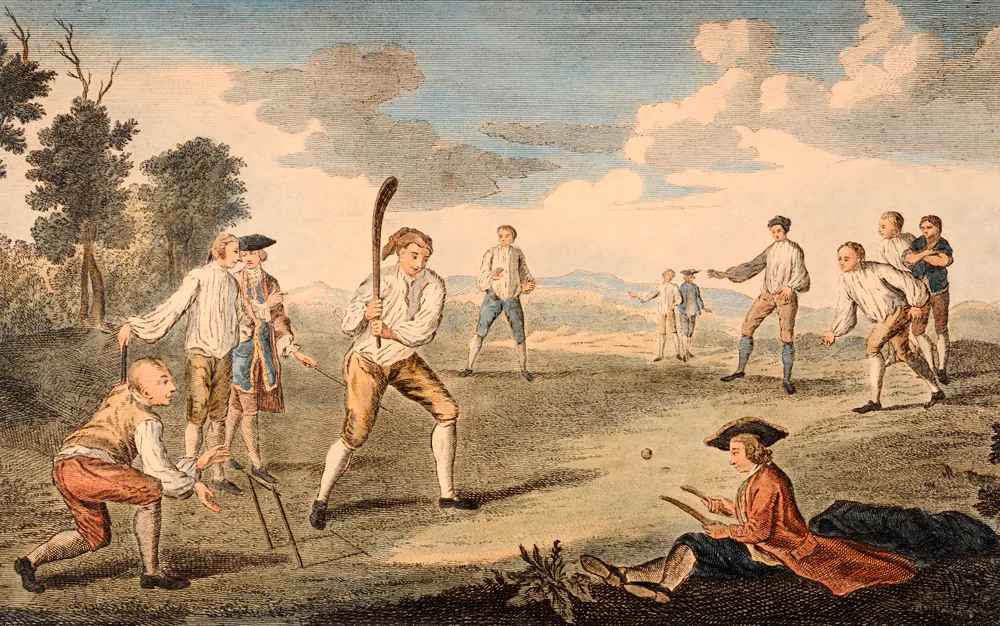

History Of Cricket In India
Cricket was introduced to India by British sailors in the 18th century, and the first cricket club was established in 1792. India's national cricket team did not play its first Test match until 25th June 1932 at Lord's, becoming the sixth team to be granted test cricket status. From 1932 India had to wait until 1952, almost 20 years for its first Test victory. In its first fifty years of international cricket, India was one of the weaker teams, winning only 35 of the first 196 Test matches it played. The team, however, gained strength in the 1970s with the emergence of players such as batsmen Gavaskar, Viswanath, Kapil Dev, and the Indian spin quartet.
The British brought cricket to India in the early 1700s, with the first cricket match played in 1721. In 1848, the Parsi community in Bombay formed the Oriental Cricket Club, the first cricket club to be established by Indians. After slow beginnings, the Europeans eventually invited the Parsis to play a match in 1877. By 1912, the Parsis, Sikhs, Hindus and Muslims of Bombay played a quadrangular tournament with the Europeans every year.In the early 1900s, some Indians went on to play for the England cricket team. Some of these, such as Ranjitsinhji and KS Duleepsinhji were greatly appreciated by the British and their names went on to be used for the Ranji Trophy and Duleep Trophy – two major first-class tournaments in India. In 1911, an Indian team went on their first official tour of the British Isles, but only played English county teams and not the England cricket team.
History Of Cricket Globally
The years from 1726 to 1763 are the period in which cricket established itself as a leading sport in London and the south-eastern counties of England. In 1726, it was already a thriving sport in the south east and, though limited by the constraints of travel at the time, it was slowly gaining adherents in other parts of England, its growth accelerating with references being found in many counties to 1763. Having been essentially a rural pastime for well over a century before the Restoration in 1660, cricket became a focus for wealthy patrons and gamblers whose interests were to fund its growth throughout the 18th century. Their investment poured money into the game and created the earliest county teams, the first professionals and the first important clubs, all participating in games that have important match status.